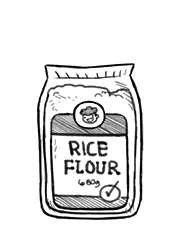

rice flour
Rice flour is made from finely milled rice, and is made from both brown and white rice. In Japan, rice flour is called komeko 米粉, and is available in two forms: glutinous and non-glutinous.
Glutinous flours are sweet/sticky, and include mochigomeko もち米粉, made from ground cooked glutinous rice and used as a thickener/to make mochi, and shiratamako 白玉粉, is produced from ground uncooked glutinous rice and is used to make confectioneries. Non-glutinous flour varieties are used to make flat breads, breads etc
Weight: 1 cup | 4 1/2 oz | 128 g
rice
Rice is the seed of the grass species Oryza sativa (asian rice) or Oryza glaberrima (african rice). Rice is the most important grain with regard to human nutrition and caloric intake, providing more than one-fifth of the calories consumed worldwide by humans. Many varieties of rice are fortified to reduce malnutrition.